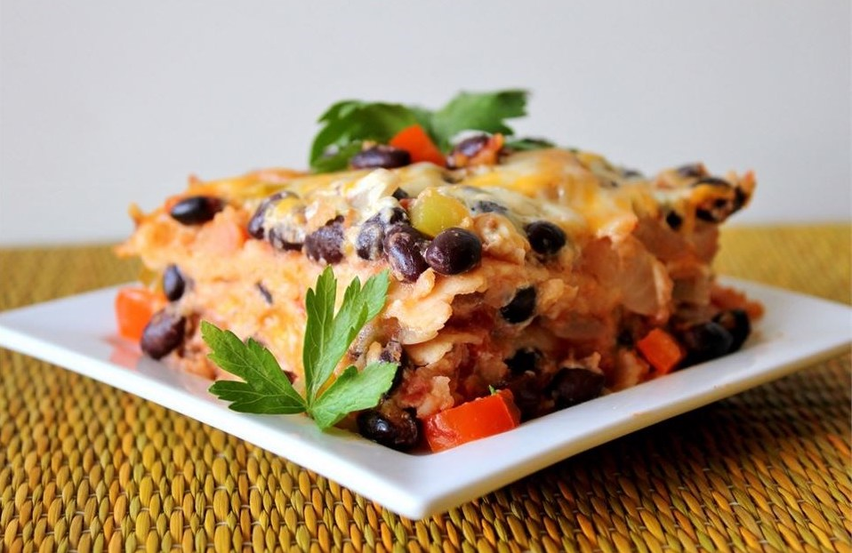

Black Bean Lasagna Recipe
a delicious vegetarian lasagna using corn tortillas instead of lasagna noodles, layered with salsa, black beans, cheese, and guacamole.

Ingredients
- 1 tablespoon vegetable oil
- 2 onions
- 4 cloves garlic, chopped
- ½ green bell pepper, diced
- ½ red bell pepper, diced
- 1 (14.5 ounce) can chopped tomatoes
- 1 cup salsa
- 2 (15 ounce) cans black beans, drained and rinsed
- salt and black pepper to taste
- 2 avocados - peeled, pitted, and mashed
- 1 tablespoon fresh lemon juice
- 12 (6 inch) corn tortillas, quartered
- 2 cups shredded Cheddar cheese